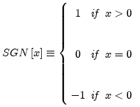

<html>

 <body>
 <h1>Signum (Sign)</h1>

 <p>The signum function assigns the numerical values 0, +1, and -1
to the dependent variable based on the algebraic sign of the argument.</p>

 <p align="center"></p>
 
 <p>The signum function may be translated
by inserting an additive constant factor into the argument:</p>

 <p align="center"></p>
 
 <p>Parameters:</p>
<ul type="square">
<li>Amplitude, A<sub>0</sub></li>
<li>Center, x<sub>0</sub></li>
</ul>

<p>Scaling the argument of SGN[x] by a real-valued factor b has no effect on the
amplitude at any location. </p>
 
 <p>Support: infinite </p>
 <p>Area: zero </p>
  <p>Symmetry: odd </p>
  
    <p>Read more about the signum function at:</p>
<ul type="square">
<li><a href="http://en.wikipedia.org/wiki/Sign_function" target="_blank">Wikipedia</a></li>
<li><a href="http://mathworld.wolfram.com/Sign.html" target="_blank">Wolfram MathWorld</a></li> 
</ul>

 </body>
 </html>
